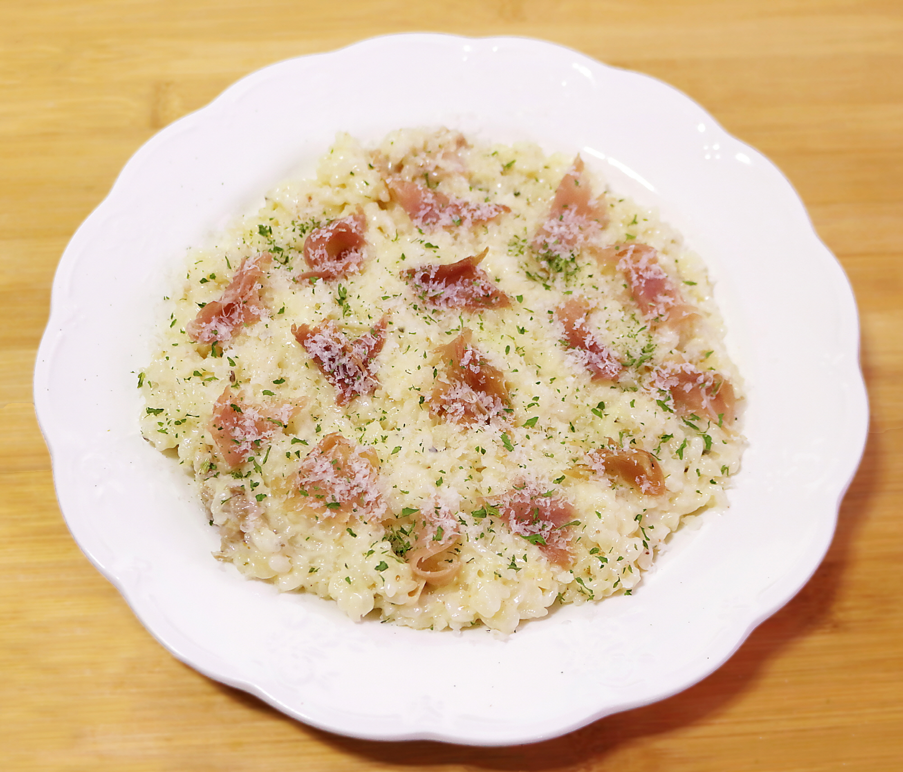

파스타
부드럽고 크리미한 소스를 사용하여 만든 파스타로, 다양한 재료와 함께 조리됩니다.
휘핑 크림, 버터, 파마산 치즈, 마늘, 양파 등을 사용하여 소스를 만들어요.
이 소스는 파스타에 곁들여 더욱 풍부한 맛을 더해줍니다.

라조또
전통적인 라조또의 맛을 베이컨의 풍미와 함께 즐길 수 있는 요리입니다.
라조또는 이탈리아의 전통적인 쌀 요리로, 쌀을 사용하여 만든 리조또라고도 불립니다.
베이컨을 추가하면 그 풍미가 한층 더해져 맛있는 조합을 이룹니다